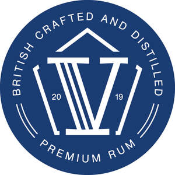

Trade Mark Journal No.2025/041 10 October 2025
UK00004270080 26 September 2025 (21,25,33)

- Class 21
- Beverage glassware; Biodegradable cups; Cardboard cups; Ceramic mugs; China mugs; Coasters (tableware); Coffee mugs; Compostable cups; Cups; Cups and mugs; Drinking bottles; Drinking cups; Drinking flasks [for travellers]; Drinking flasks for travellers; Drinking glass holders; Drinking glasses; Drinking mugs made of porcelain; Drinking receptacles; Drinks containers; Earthenware mugs; Glass bottles; Glass carafes; Glass cups; Glass decanters; Glass flasks; Glass mugs; Glasses [drinking vessels]; Glasses; drinking vessels and barware; Insulated bottles [flasks]; Insulated mugs; Liqueur cups; Mug cosies; Mug sleeves; Mugs; Mugs made of ceramic materials; Mugs of china; Mugs of porcelain; Mugs of precious metal; Mugs, not of precious metal; Plastic cups; Plastic water bottles; Porcelain coasters; Porcelain mugs; Shot glasses; Tea cups; Travel mugs; Tumblers; Tumblers for use as drinking glasses; Water bottles; .
- Class 25
- Baseball caps; Baseball caps and hats; Beanie hats; Bobble hats; Bottoms [clothing]; Caps; Caps [headwear]; Caps being headwear; Caps with visors; Casual clothing; Clothes; Clothing; Jackets (Stuff -) [clothing]; Jackets [clothing]; Jackets being sports clothing; Jerseys [clothing]; Knitwear [clothing]; Leisure clothing; Shorts [clothing]; Ties [clothing]; Visors [clothing]; .
- Class 33
- Alcoholic beverages (except beer); Alcoholic beverages, except beer; Beverages (Alcoholic -), except beer; Beverages (Distilled -); Distilled beverages; Distilled spirits; Rum; Rum [alcoholic beverage]; Spirits; Spirits [beverages]; .
V Spirits Company Limited